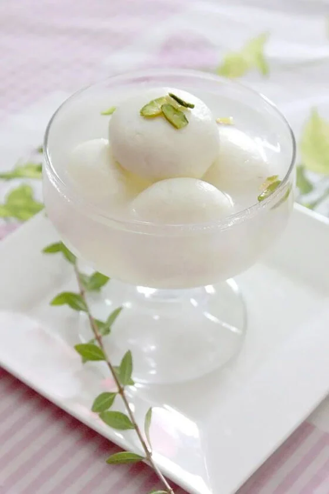

Rasgulla Recipe
Ingredients:
- 1 liter whole milk
- 2 tablespoons lemon juice
- 1 1/2 cups sugar
- 4 cups water
- 1/2 teaspoon cardamom powder
- A few saffron strands (optional)
Instructions:
- Prepare the Chenna:
- In a large pot, bring the milk to a boil over medium heat.
- Once the milk comes to a boil, reduce the heat to low and add the lemon juice gradually, stirring continuously.
- Continue stirring until the milk curdles and the whey separates from the curds.
- Turn off the heat and let it sit for a few minutes.
- Strain the curds through a cheesecloth-lined strainer, reserving the whey for later use.
- Rinse the curds under cold water to remove any lemony taste.
- Gather the cheesecloth and squeeze out excess water from the curds.
- Knead the Chenna:
- Transfer the chenna to a clean work surface and knead it with your hands for about 10-15 minutes until it becomes smooth and soft.
- Divide the kneaded chenna into small equal-sized balls and roll them between your palms to make smooth balls.
- Make the Sugar Syrup:
- In a large pot, combine the sugar and water.
- Bring the mixture to a boil over medium-high heat, stirring occasionally until the sugar is completely dissolved.
- Add the cardamom powder and saffron strands (if using) to the syrup.
- Cook the Rasgullas:
- Gently add the prepared chenna balls to the boiling sugar syrup.
- Cover the pot with a lid and let the rasgullas cook over medium heat for about 15-20 minutes.
- Remove the lid and gently press down on the rasgullas to check if they are cooked through.
- Once the rasgullas are cooked, they will double in size and become spongy.
- Chill and Serve:
- Remove the pot from heat and let the rasgullas cool to room temperature.
- Transfer the rasgullas along with the sugar syrup to a serving bowl.
- Chill the rasgullas in the refrigerator for at least 2 hours before serving.
- Serve the chilled rasgullas garnished with some saffron strands and enjoy!
Serving Tips:
Rasgullas taste best when served chilled. You can garnish them with some chopped nuts like pistachios or almonds before serving for added flavor and texture.
Ratings and Reviews
Average rating: 0/5